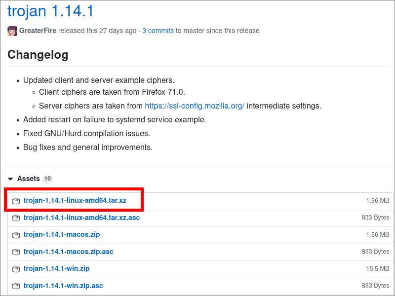
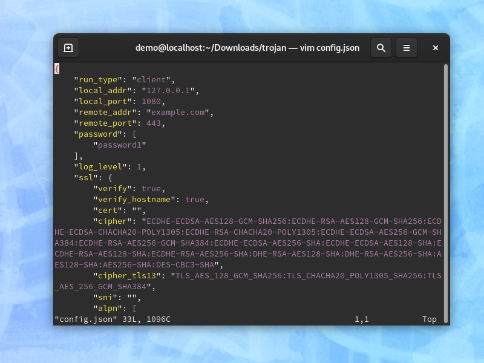
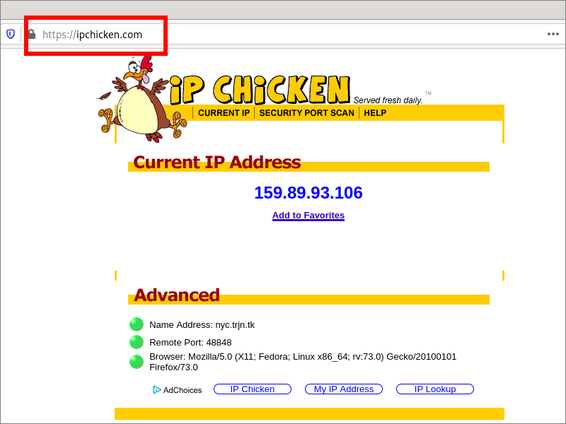

Trojan-GFW on a Linux Client
Trojan aims to help you explore the world outside the Great Firewall (GFW) of China. It tunnels your traffic over Transport Layer Security (TLS) to avoid both active and passive detection and Internet Service Provider (ISP) Quality-of-Service (QoS) limitations.
In this tutorial, you’ll see how to install Trojan on a Linux client. Examples would be Debian, Ubuntu, CentOS, and Fedora. This tutorial covers the client only. Other tutorials cover the server part of the process.
1. Obtain Server Information
No matter whether you, or somebody else, set up the Trojan-GFW server, you will need to obtain three pieces of information:
- The server hostname or IP address, for example,
nyc.trjn.tk - The server port, which is commonly
443 - A password for the Trojan server, e.g.
MLQR4OVq
2. Set Up Client
2.1. Download Trojan for Linux
Open Firefox and visit the releases page for Trojan-GFW on Github. Determine the latest release.
Download the latest release. For example, at the time of writing, it is named trojan-1.14.1-linux-amd64.tar.xz.
Open a terminal emulator. Change into your Downloads
directory:
cd Downloads
Install the xz utilities. On Debian or Ubuntu the package is named
xz-utils:
sudo apt install xz-utils
On CentOS or Fedora the package is named xz:
sudo yum install xz
Extract the archive:
unxz trojan-1.14.1-linux-amd64.tar.xz
tar -xf trojan-1.14.1-linux-amd64.tar

2.2. Configure Trojan for Linux
Change into the extracted directory:
cd trojan
Copy the sample Trojan client configuration file to the configuration file that will be used:
cp examples/client.json-example config.json
Edit the configuration file:
vi config.json
You will need to make these changes:
- Replace remote address
example.comby your actual server name, e.g.nyc.trjn.tk - Replace remote port
443if necessary - Replace
password1by your actual password e.g.MLQR4OVq - On Linux, you need to set SSL verify to
false
Write the file to disk, and quit the editor.
2.3. Configure Firefox
Now configure Firefox to use Trojan, which is listening on
localhost port 1080.
- From the hamburger menu select Options.
- Under Network Settings, select Settings.
- Choose Manual proxy configuration.
- SOCKS Host
127.0.0.1. - Port
1080. - Select version SOCKS v5.
- CheckProxy DNS when using SOCKS v5.
- Click OK.

2.4. Connect
Run the Trojan executable with your configuration file:
./trojan
2.5. Test
End-to-end test your entire configuration (server and client) by opening Firefox on your Linux computer and visiting https://ipchicken.com.
You should see your server IP address, not your client IP address.
2.6. Disconnect
In your terminal emulator, do Ctrl+c to end Trojan. Close the terminal emulator.
Set Firefox back to its direct, non-proxied settings.
3. Troubleshoot Issues
You can find more information on Trojan on the wiki at https://github.com/trojan-gfw/trojan/wiki.
If you have any problems, here are some steps you can take to troubleshoot.
Firstly, double-check that your client configuration file is an exact match for the settings on your server.
Look for messages in the terminal emulator window where Trojan is running on the client.
If you have access to the server, you can look for messages with these commands:
systemctl status trojan
journalctl -u trojan
tail /var/log/nginx/error.log
Look at the article “What the heck do these logs mean?” on the Trojan wiki.
You can ask questions about Trojan in the Telegram Messenger group Trojan-GFW.
If you have an issue with Trojan, you can create a new issue on https://github.com/trojan-gfw/trojan/issues.